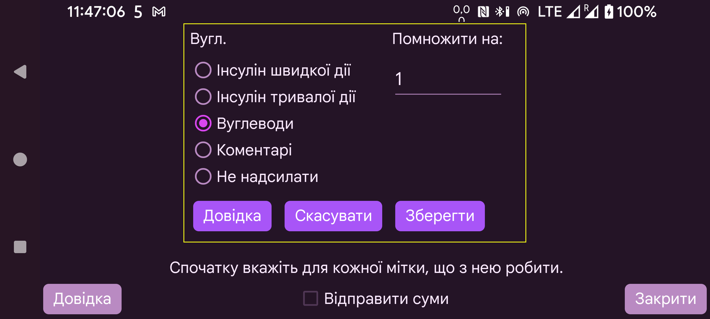

Так само, як і для Libreview, ви також можете вказати, як представляти суми через сервер Nightscout у Juggluco.
Виберіть, як значення Juggluco, введені під певною міткою, слід надсилати до LibreView. Кілька типів значень можна надсилати з тією самою міткою LibreView. Наприклад, якщо в Juggluco вуглеводи та чисту глюкозу в їжі записують під окремими мітками, для обох можна вибрати надсилання як Вуглеводи до LibreView.
Для вуглеводів можна помножити значення Juggluco на певне число, щоб перетворити інші одиниці на грами. Якщо в Juggluco ви рахуєте порції по 10 грамів, укажіть тут 10 — до LibreView надсилатимуться грами.
Коментарі означає, що значення надсилається до LibreView так, ніби коментар було додано в LibreLink. Якщо вибрано коментарі, надсилаються мітка й число, введене під нею. Наприклад: «Велосипед 50, якщо була мітка «Велосипед» і під нею введено «50». Текст «Велосипед 50» буде показано під графіком у розділі «Щоденний журнал» LibreView у вказаний час.